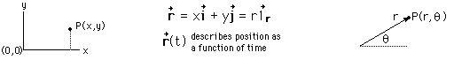

Position
Specifying the position of an object is essential in describing motion. In one dimension some typical ways are
In two dimensions, either cartesian or polar coordinates may be used, and the use of unit vectors is common. A position vector r may be expressed in terms of the unit vectors.

In three dimensions, cartesian or spherical polar coordinates are used, as well as other coordinate systems for specific geometries.
The vector change in position associated with a motion is called the displacement.
|
Index |